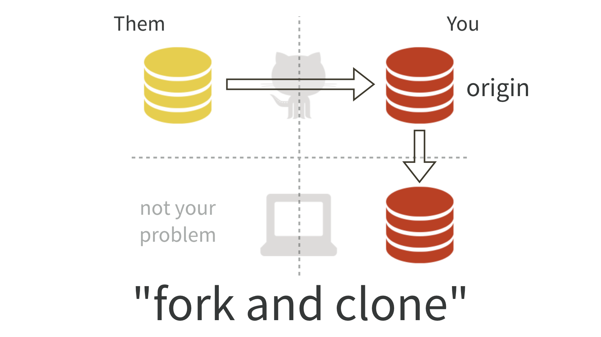
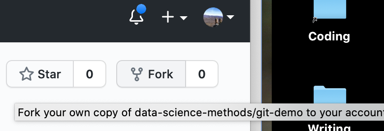

Chapter 3 Git and Version Control
3.1 Some motivating examples
- While working on your analysis code, you accidentally delete the first 35 lines of the script. You only discover this three days later, when you restart R and try to run the script from the top. Because of the time you last half of your senior thesis, you’ve been saving every couple of minutes.
- You’re working on a paper with two coauthors. You prepare the final draft to send for submission:
paper final.docx. But one of your coauthors discovers a typo. Now it’spaper final fixed typo.docx. Another realizes six references are missing.paper final fixed typo refs.docx. That’s getting confusing so you change it topaper 2 Aug 2021.docx. Once it comes back from review you need to make revisions. Now you havepaper 30 Jan 2022.docxand, after your collaborators make their changes,paper 12 February 2022 DJH.docxandpaper 12 February 20222 final.docx. - You have a complicated analysis spread over several scripts. You want to explore a variant analysis, but doing so will involve changes in 15 different places across 3 different files. You’re not sure if this variant analysis will work; you may or may not want to keep it.
3.2 Version control
Basic idea: Tools for tracking and reversing changes to code over time
Useful for identifying and reversing breaking changes
Implementations upload to cloud, track who contributes code, control who can suggest vs. actually change code
Good for collaboration, publishing code
git
- One of many version control systems
- Very popular in part thanks to GitHub, which provides free hosting for open-source projects
3.3 How to do things with git
- Getting help
git command -hman git-command(hitqto exit)
- Interfaces
- Command line
- RStudio projects
- GUIs: GitHub, Sourcetree
- Setup
- Installation
- User config
$ git config --global user.name "Maria Hernandez" $ git config --global user.email mhernandez123@ucmerced.edu $ git config --global core.editor "nano"- You don’t have to use
nano, but it’s the best option for beginners. For more on text editor options, see here https://git-scm.com/book/en/v2/Appendix-C%3A-Git-Commands-Setup-and-Config#_core_editor
git init- Create a folder called
testand open a terminal window there.
$ git status $ git init $ git status- Create a folder called
addandcommita file Create a text file and save it asreadme.txtintest.
$ git status
$ git add test.txt
$ git status
$ git commit -m "my first commit"
$ git statusAfter adding a file, you can add all changes to tracked files using -u:
$ git status
$ git add -u
$ git status
$ git commit -m "-u is a shortcut"NB You always need to add and then commit. Doing just one by itself doesn’t do much.
.gitignore- Create a subfolder
imagesand put an image file of some kind in it. - Create a text file
.gitignoreintest. Put the following line in:
images- Add another image file. Edit
.gitignoreso that it ignores the first image file but not the second.
- Track
.gitignore
- Create a subfolder
3.4 Working with GitHub remotes
- remote: A copy of a repository that lives on a server somewhere else
3.4.1 Working with your own repos
- On GitHub, click “New” and walk through the steps to create a new repository. Let’s call it
mytest. - Copy the URL:
https://github.com/username/mytest - Back in the Terminal window:
$ git remote add origin https://github.com/username/mytestYou’ll need to authenticate with your GitHub password. If you forget the exact incantation, try git push; it will give you a helpful example.
pushand then refresh GitHub in your browser
$ git push- Edit the repository (eg, use the prompt near the bottom to create a readme). Then:
$ git fetch ## Downloads a comparison, but doesn't change your local files yet
$ git status
$ git pull ## Changes your local files
$ git status3.4.2 Working with someone else’s repos
GitHub lets you download someone else’s repo (“clone”), and modify it locally, but not upload directly. You can suggest a change to someone else’s code by submitting a pull request, which requires forking the repository.

Figure 3.1: Forking copies a repository to your GitHub account. Then you clone the copy to your local machine. You can push to your remote copy as usual. You can suggest changes to the original using a pull request. Source: https://happygitwithr.com/fork-and-clone.html
- A demonstration repository: https://github.com/data-science-methods/git-demo
- Fork step: Look for the
forkbutton in the upper-right

Figure 3.2: The fork button is near the upper-right corner of a GitHub repository page. I wasn’t able to find a keyboard shortcut for this. :-(
- Clone step: After creating the fork, you need to download a copy to your machine. Open a Terminal window to the folder right above where you want the repository folder to be located, eg,
projects.
$ git clone https://github.com/YourUsername/git-demo
$ cd git-demo
$ git status- Push step: Make changes locally, then push them back up to your GitHub copy of the repo
3.5 Lab
The lab for this section can be found at https://github.com/data-science-methods/lab-w2-git.